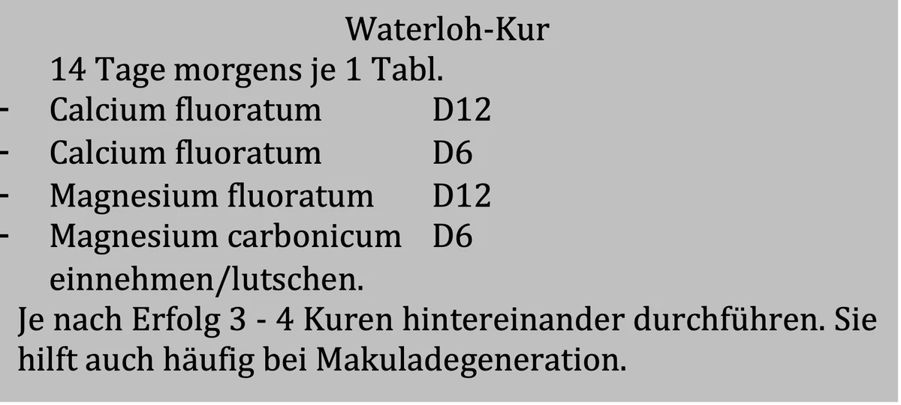

Augen
ALLGEMEIN: Unsere Augen sind ein wichtiges Sinnesorgan. Hierzu gibt es viele Sprichwörter: Was mein Auge sieht, glaubt mein Herz, Das kann ins Auge gehen, Augen lügen nicht, Des Menschen Augen sind Fenster seiner Seele. (Hildegard von Bingen). Alle heftigen Gefühle (Wohlempfinden Schau mir in die Augen Kleines, Wut - Wenn Blicke töten könnten, usw.) werden über das Auge erreicht und ausgedrückt. Seele und Sehen hängen sehr intensiv voneinander ab. Sehen ist die Königsdisziplin unter den sinnlichen Wahrnehmungen. Mit keinem anderen Sinnesorgan nehmen wir in kürzester Zeit so viele Eindrücke auf, wie mit den Augen. Experten schätzen, dass wir rund 70 % aller Informationen aus unserer Umwelt auf diese Weise erhalten. Unsere Augen sind wertvoller als Kristalle sagt man schon seit eh und je. Sorgen Sie deshalb für Ihre Gesundheit. Wer gut sieht, lebt länger! Die Behandlung soll sich nicht nur auf das Auge selbst beschränken, sondern muss den ganzen Menschen erfassen (Leber-Fernsymptom). Die Leber ist die Mutter der Augen. Alle krankhaften Veränderungen am Auge sind leberbedingt. Ist die Leber etwa durch die Einnahme vieler Medikamente mit der Entgiftung überfordert, kann sich das in nachlassender Sehfähigkeit äußern. In der chinesischen Medizin sagt man: Die Leber öffnet das Auge. Das bedeutet: Ist die Leberenergie gestört, kann es zu Augenerkrankungen kommen. Denken Sie nur an Hepatitis (Gelbsucht). Ist jemand daran erkrankt, so färben sich zuerst die Skleren (das Weiße im Auge) gelb und danach die Haut. Leberwickel zur Entgiftung anwenden (siehe Leber). Auch Wirbelsäule (Fehlstellung des 2. Halswirbels) und Zähne (z.B. Eckzahn gilt als Augenzahn) können mit Erkrankungen der Augen (Fernsymptome) zusammenhängen. Aber auch Nackenverspannungen (siehe Arthrose) können Sehstörungen verursachen. In einem kranken Organismus, ist ein gesundes Auge nicht vorstellbar. (Sebastian Kneipp) Ein Leben lang gute Augen haben, das wünscht sich wohl jeder. Das Gute: Bestimmte Nährstoffe können dabei helfen. Hinweis: Nachstehende Empfehlungen sind nicht bestimmt, lokale fachärztliche Maßnahmen zu ersetzen, sie dienen lediglich als Ergänzung.
Ernährung für die Augen
ERNÄHRUNG: Besonders in grünen Gemüsen finden wir wichtige Nährstoffe für das Auge, wie Carotin, Lutein und Zeaxanthin.
- Vitamin A ist unverzichtbar für gesunde Augen. Seine Vorstufe (das sogenannte Betacarotin) findet sich in gelben, roten, orangefarbenen Gemüsen und Obstsorten. Carotinreiche Lebensmittel sind Grünkohl, Brokkoli, Spinat, Blattsalat, Feldsalat. Grüne Erbsen, Bohnen, Rosenkohl, Mais, Karotten, Kürbis, Avocado, Tomaten, Aprikosen, Mangos, Paprika, Passionsfrüchte, Leber.
- Vitamin B2 zählt auch als Augenvitamin. Vollkorn-/Milchprodukte, Fleisch, Leber, Geflügel, Eier, Weizenkleie.
- Vitamin C ist wichtig für die Augen, fördert die Durchblutung und stärkt die Gefäßwände. Die Konzentration ist in der Linse 30 x höher als im Blut. Obst, Gemüse, Paprika, Zitrusfrüchte insbesondere Orangen essen.
- Vitamin E fängt sogenannte Freie Radikale ab und verringert Linsentrübung. Vollkornprodukte, Weizenkeimlinge, Vitamin E Tabletten (z.B. Mowivit® Kapseln).
- Selen: Hülsenfrüchte, Knoblauch, Paranüsse.
- Zink: Erdnüsse, Haferflocken, Rindfleisch, Fisch. Zinktabletten nicht länger als 3 Monate einnehmen, ansonsten wird der Kupferspiegel negativ beeinflusst. Das Fehlen solcher Vitamine und Mineralstoffe kann zu roten, entzündeten, tränenden und schmerzenden Augen führen sowie zum schlechten Sehen in der Dämmerung. Um 17 % verbessert sich die Sehkraft, wenn wir dunkle Schokolade (70 %) essen. Dies stellten Forscher an der University of Reading in England fest.
GETRÄNKE: Eltern sollten darauf achten, dass ihre Kinder morgens vor der Schule genug trinken, da zu wenig Flüssigkeitszufuhr bei Schulkindern Sehstörungen verursachen kann. Die Kinder brauchen keine Brille, sehen aber schlecht. Grundschüler sollten pro Tag zwischen 0,8 und einem Liter trinken, Jugendliche bis zu 1,5 Liter.
Bindehautentzündung
Sie ist eine häufige Augenerkrankung. Die Bindehaut ist geschwollen, das Weiß des Augapfels gerötet. Beim Aufwachen sind die Augen verklebt. Sie jucken, brennen und tränen.
URSACHEN: Zugluft (beim Autofahren Fenster schließen), Sonne, Chlor und Klimaanlagen, sind Stress für unsere Augen. Fremdkörper, Allergien (Nahrungsmittel, Gluten-Unverträglichkeit/Weizen, Roggen etc.), Rotwein, Jod, Zahnpasta wechseln, bzw. ohne Fluor verwenden. Überanstrengung, bei Bildschirmarbeit Pausen einlegen. Pilzsporen: Auch Augen werden von Mykosen befallen, und diese entwickeln sich dann zu Bindehautentzündungen, Netzhautveränderungen oder Glaukom. Darm auf Candida albicans untersuchen lassen, Arzt/Heilpraktiker befragen. Vireninfektionen (beide Augen meist nacheinander) oder Bakterien (meist gleichzeitig). Borreliose (eingekapseltes Zeckengift), Rheuma, Vitamin A- sowie B2-Mangel. Aber auch Hausstaub, Milben, chloriertes Wasser/Schwimmbad, Blütenpollen, Tiere, Antibabypille, künstliche Hormontherapie sowie eine Übersäuerung kommen als Ursache in Frage.
ERNÄHRUNG: In hohen Dosen kann Vitamin A jedoch im Organismus gefährliche Nebenwirkungen auslösen, es ist daher ratsam, nur Beta-Carotin (Vorstufe) zuzuführen. Der Körper bildet hieraus exakt die benötigte Menge von Vitamin A. Zuviel Beta-Carotin wird ohne schädliche Folgen ausgeschieden. Es ist reichlich enthalten in Möhren, Brokkoli, Chicorée, Spinat, Feld-, Endivien- und Kopfsalat sowie Hülsenfrüchten. Bei Mangel kommt es zu Brennen, Zuckungen, Entzündungen der Lidränder. Häufig treten auch Gerstenkörner auf. Sonstiges: Lüften, viel trinken, Augen öfters Ruhe gönnen, Hände oft waschen und aus dem Gesicht lassen. Eine Bindehautunterblutung – durch starkes Heben und Pressen verursacht – ist im Grunde wie ein blauer Fleck auf der Haut, der nach einigen Tagen von alleine verschwindet.
THERAPIE: Umschläge: Tee aus Augentrost/Euphrasia (keine Kamille, kann allergische Reaktionen hervorrufen). 1 Teelöffel/Tasse mit kaltem Wasser übergießen, zum Kochen bringen, nach 2 Minuten abseihen. Pads in den lauwarmen Tee tauchen und etwa 10 Minuten auf die geschlossenen Augen legen. Augentrost wirkt beruhigend und entzündungshemmend. Gegen verquollene Augen nach dem Aufwachen wirken kühlende Kompressen aus dem Gefrierfach wahre Wunder. Einfach für einige Minuten auf die Augen legen und entspannen. Durch die Kälte ziehen sich die Blutgefäße zusammen und der Stoffwechsel wird angeregt. Auch gekühlte Gurkenscheiben reduzieren Schwellungen und spenden dabei zusätzlich Feuchtigkeit. Feuchtes Tuch (Küchenpapier oder Wattepads) mit eigenem Urin oder Schwedenkräuter benetzen und ein paar Minuten auf die geschlossenen Augen legen. Fußwickel mit Obstessig. 20/20/20 Regel: Alle 20 Minuten mindestens 20 Sekunden lang auf einen Gegenstand schauen, der 20 Fuß - also ungefähr 6 m - entfernt ist. Diese aus den USA stammende Regel ist gerade für „Schreibtischtäter“ eine Wohltat. Ihre Augen entspannen sich beim Blick in die Ferne und erholen sich dadurch von der anstrengenden Bildschirmarbeit. Der schonendste Abstand für die Augen am Computer sind 60-100 cm. Zweiten Halswirbel einrichten lassen (siehe Dorn).
MEDIKAMENTE: Mucokehl® D5 Augentropfen, D5Allium cepa D6 (3 x täglich 5 Globuli), Euphrasia Augentropfen/WALA. Vitamin D3 und Vitamin K2 (MK-7) sind für die Augengesundheit sehr förderlich (Arzt/Heilpraktiker befragen).
Trockene Augen
ALLGEMEIN: Das sogenannte Sicca-Syndrom gilt als häufigste Erkrankung in der Augenheilkunde. In Deutschland gibt es ca. 10 Millionen Menschen, die hierüber klagen. Insbesondere in der Heizperiode macht sich dieses Leiden noch stärker bemerkbar. Im Verlauf eines Tages blinzeln wir durchschnittlich 14.000 mal mit den Augen. Mit jedem Lidschlag wird ein hauchdünner Tränenfilm über das Auge verteilt. Dieser hält die Augenoberfläche glatt, sauber, feucht und schützt das Auge vor Schadstoffen. Wenn die Menge oder die Zusammensetzung des Tränenfilms gestört ist, kommt es zu Austrocknungserscheinungen der Horn- und Bindehaut. Paradoxerweise ist auch ein verstärkter Tränenfluss ein Anzeichen für ein trockenes Auge.
URSACHEN: Das Trockene Auge hat meist zwei Ursachen: Entweder bilden die Tränendrüsen nicht genügend Flüssigkeit (bei ca. 8 % der Patienten) oder der Tränenfilm ist nicht fettig genug (Defekt der Lipidschicht bei ca. 80 % der Patienten). Nachlassende Tränenproduktion im Alter, starkes Tränen, Polyarthritis, Diabetes. Verstopfte Meibom-Drüsen. Übersäuerung (die Bindehäute können durch den hohen Säurewert des Augenwassers chronisch gereizt und entzündlich gerötet sein), sowie Erkrankung der Schilddrüse. Fehlbesiedelung des Darmes, klimatische Einflüsse, Umweltbelastungen (Ozon, Staub), trockene Heizungsluft, Bildschirmarbeiten, Light-Produkte, Hausstaub, Milben, Allergie (testen lassen) etc., Stress, Nebenwirkungen von Medikamenten. Betablocker, Antihistaminika, Antidepressiva, Migränemedikamente oder auch eine Hormonersatztherapie können für trockene Augen verantwortlich sein (Arzt befragen). Hautkrankheiten, Herzrhythmusstörungen sowie hoher Blutdruck, chronische Nasennebenhöhlenentzündung und Hormonschwankungen durch Schwangerschaft, Stillzeit und in den Wechseljahren. Silicon-Brustimplantate. Zigarettenqualm, Klimaanlagen meiden. Richten Sie im Auto die Lüftung nicht aufs Gesicht. Der Mund-Nasen-Schutz (Corona) sollte gut sitzen, damit die Ausatmungsluft nicht ins Auge zieht.
SYMPTOME: Brennen, Trockenheit, Sandkorn/Druckgefühl und Lichtempfindlichkeit, insbesondere nach dem Erwachen, Müdigkeit der Augen, Haften der Lider auf dem Augapfel beim Lidschlag.
ERNÄHRUNG: 2 x wöchentlich Fisch essen (Lachs, Hering, Thunfisch, Makrele). Die darin enthaltenen Omega-3-FS haben eine entzündungshemmende Wirkung. Viel Lein-, Oliven- Walnussöl auf den täglichen Speiseplan bringen, sowie Avocados, Brokkoli, Kohl, Oliven, Spinat, Kurkuma, Linsen und grüner Tee.
THERAPIE: Mehrmals täglich gründlich lüften, ausreichend trinken (mindestens 2 Liter täglich). Häufiger Aufenthalt an frischer Luft. Gebläse nicht auf die Augen richten. Pausen bei der Bildschirmarbeit einlegen, dabei öfters blinzeln und in die Ferne sehen. Öfters kalte Gesichtsgüsse über der Badewanne durchführen. Häufig gähnen - auch ohne Müdigkeit. Auf regelmäßigen Schlaf achten. Ohne Schlaf trocknen die Augen aus. Wer traurig ist, kann schlechter sehen. Die Tränenzusammensetzung ist bei Freude anders, als bei Trauer. Äußere Augenbrauen (Tränendrüse) akupressieren und Mulltuch mit Augentrost- oder Stiefmütterchentee auf die geschlossenen Augen auflegen. Befeuchten Sie die Augen unmittelbar vor dem Schlafen mit Augentropfen, damit sie sich nachts erholen können. Der SOS – Waschlappen – Trick. Wenn die Augen jucken, brennen, tränen und anschwellen, kann ein kalter, nasser Waschlappen schnelle Linderung schaffen. Einfach auf die Augen legen, Wimpern und Lieder sanft abwischen.
MEDIKAMENTE: Künstliche Tränenflüssigkeit ohne Konservierungsstoffe, TEARS AGAIN® (liposomales Augenspray, einfach auf das geschlossene Auge sprühen). Vitamin B6 Tabletten, Arzt/Heilpraktiker befragen. Natrium chloratum D6 (3 x täglich 2 Tabletten lutschen). Bei starken Beschwerden kann alle 5 Minuten eine Tablette gelutscht werden, bis Besserung eintritt. Visiodoron Malva® Augentropfen/WELEDA. Mucokehl® D5 Augentropfen sind zur örtlichen Anwendung ins Auge zu träufeln, wenn die Sehkraft allgemein gemindert ist, eine Linsentrübung vorliegt oder z.B. der Augeninnendruck erhöht ist. Hyaluron-ratiopharm® Augentropfen. Sie verteilen sich am besten, wenn man mit geschlossenen Lidern den Augapfel bewegt und den Tränenkanal mit den Zeigefingern zudrückt.
Augenringe/Tränensäcke
Die weiche, besonders durchlässige Haut unterhalb der Augen ist 10-mal dünner als die übrige Gesichtshaut und daher sehr empfindlich. Durch einen zu hohen Kohlenhydrat-Genuss werden die Nieren „verschlampt“.
URSACHEN: Sie können genetisch bedingt oder auf einen Lymphstau zurückzuführen sein. Durch Ermüdung/Erregung in den Tagen vor oder während der Menstruation oder auch in den Wechseljahren treten Schwellungen (sogenannte Tränensäcke) besonders häufig auf. Sie resultieren aus einer Ansammlung überschüssiger Flüssigkeit sowie Vitamin- und Eisenmangel. Möglich ist aber auch eine Störung des Lymphabflusses. Schüßler Salze Nr. 6 (Kalium sulfuricum D6) entgiftet und Nr. 10 (Natrium sulfuricum D6) hilft bei der Ausleitung von überschüssigem Wasser im Körper (3x tägl. je 2 Tabletten im Mund zergehen lassen). Mehrmals täglich die Haut um die Augen herum mit ein paar Tropfen Sesamöl massieren. Geschwollene Augen sind oft das Fernsymptom von: Amalgam, Unterfunktion der Schilddrüse, Nieren-/Lebererkrankung, Tierhaare, Hausstaub, Pollen, Weizen (Gluten-Unverträglichkeit), Milch und Schokolade sowie Wassermangel. Auch bei einem Nasen-Halskatarrh kann die Entzündung leicht auf die Augen übergehen. Täglich Nasendusche anwenden (siehe Nase).
THERAPIE: Auflagen mit: Quark, Eischnee, Gurkenscheiben, kalte Kompresse mit einem Waschlappen (10-15 Minuten). Feuchte Schwarzteebeutel auflegen. Die Gerbsäure (Tannin) lässt sie schnell abschwellen. Petersilie mit heißem Wasser übergießen, 15 Minuten ziehen lassen, 2 Wattepads eintauchen, auswringen und ca. ½ Stunde auflegen. Eine kurze Nacht muss man Ihnen nicht ansehen, wenn Sie für einige Minuten kalte, rohe Kartoffelscheiben auf die Augen legen.Vitamin K2-Mangel. (Arzt/HP befragen)
Ödeme
Über dem Auge, meist Kaliummangel (Kalium carb. D6 3 x täglich 2 Tabletten im Mund zergehen lassen). Ein verdicktes Oberlid kann ein Hinweis auf die Überforderung des Herzens sein. Regelmäßig Blutdruck kontrollieren. Unter dem Auge, meist Natriummangel (Natrium chloratum D6, 3 x täglich 2 Tabletten im Mund zergehen lassen) oder Vitamin B1-Mangel. Wenn die Augen morgens geschwollen sind, ist das oft ein Zeichen für niedrigen Blutdruck. In der Nacht staut sich die Gewebsflüssigkeit. Auch das Schlafen auf einem zu flachen Kissen kann unter anderem dazu führen, dass Körperflüssigkeiten über Nacht unterhalb des Auges konzentriert werden. 2 gekühlte Esslöffel (Gefrierfach/Kühlschrank) mehrmals hintereinander mit der Rückseite auf die geschlossenen Augen legen. Wird es zu kalt, Löffel wieder abnehmen und warten, bis sie etwas wärmer geworden sind. Vitamin E unterstützt die normale Nierenfunktion und fördert so die Ausscheidung. Oft liegt auch ein Eiweißmangel vor: Frische Milch, Eidotter, Leber, Fleisch essen. Entsprechende Stelle längere Zeit mit Olivenöl bestreichen (vor dem Schlafengehen).
Gerstenkorn
Klein, aber schmerzhaft, entleert sich meist nach einigen Tagen von selbst. Therapie: Auflagen mit Augentrost-Tee.
MEDIKAMENTE: Mucokehl® D5 Augentropfen. 3 x täglich 10 Sprühstöße Spenglersan® Kolloid G in die Ellenbeuge einreiben, zusätzlich 3 x täglich eine damit getränkte Kompresse für 5-10 Minuten auflegen.
Hagelkorn
Erbsengroße chronische Entzündung der Meibom Drüse, die nach vorhergehender Anästhesie vom Augenarzt entfernt werden muss.
MEDIKAMENTE: Hepar sulf. Oligoplex® (innerlich - 3 x täglich 2 Tabletten), Mucokehl® D5 Augentropfen.
Nachtblindheit
Schon in der wichtigsten medizinischen Buchrolle des alten Ägypten - dem Papyrus Eber - wird der Verzehr von Leber (Vitamin A) empfohlen. Viel Möhren, Salat, Spargel, Haferflocken, Rote Bete essen. Heidelbeeren verbessern die Sehschärfe. Bevor Bomberpiloten im zweiten Weltkrieg ihre Nachteinsätze flogen, aßen sie reichlich Heidelbeerkonfitüre.
MEDIKAMENTE: Ginkgo Präparate zur besseren Durchblutung. Das Auge ist das am besten durchblutete Organ und profitiert von diesem Arzneistoff. Kalium phosphoricum D6 und Silicea D12 (je 3 x täglich 2 Tabletten im Mund zergehen lassen).
Makuladegeneration
ALLGEMEIN: Die Makuladegeneration (AMD) ist eine Erkrankung, bei der sich die Sehfähigkeit des Auges von innen heraus mehr und mehr verringert, bis nur noch Schemen am Rand des Sichtfeldes erkennbar sind oder die Patienten komplett erblinden. Sie wird nachweislich durch Schädigungen der Netzhaut durch UVA Strahlen begünstigt. Bei einer altersbedingten AMD verändert sich die Netzhautmitte. Das Tückische: In der frühen Phase der Krankheit merkt man davon nichts. Man unterscheidet zwei Verlaufsformen, die Trockene und die Feuchte. Rund 85 % der Patienten leiden an der trockenen AMD. Sie schreitet langsam voran, weil die Versorgung schlechter wird. Bei ihr stirbt das zentrale Gewebe nach und nach ab. Der Betroffene nimmt dabei zunehmend einen dunklen Fleck im Zentrum wahr. Die Feuchte geht aus der Trockenen hervor und ist viel aggressiver. Sie bedroht das Augenlicht und muss unbedingt fachärztlich behandelt werden. Bei dieser Form versucht der Körper die Nähr- und Sauerstoffversorgung des Auges zu verbessern, indem er von der Aderhaut aus neue Gefäße bildet. Diese sind jedoch durchlässig, Gewebsflüssigkeit tritt aus oder es kann zu Blutungen mit massiver Sehverschlechterung kommen. Werden die Einblutungen nicht gestoppt, kann die Makula vernarben. Die Folge ist ein zunehmender Verlust der Sehkraft, die zur Erblindung führen kann. Eine Altersbedingte Makula Degeneration (AMD), ist die häufigste Ursache für ein Nachlassen der Sehkraft bei Senioren und führt im schlimmsten Fall zur Erblindung. Sie gehört zu den in den westlichen Industrieländern weit verbreitetsten Augenerkrankungen. Die Makula ist das Zentrum schärfsten Sehens auf der Netzhaut des Auges. Hier befinden sich die meisten Seh- und Sinneszellen, die im Verlauf der Erkrankung zunehmend zerstört werden und zur Erblindung führen können. Das Makulapigment enthält eine hohe Konzentration der Carotinoide Lutein und Zeaxanthin. Dadurch erscheint das Makulapigment gelb und wird auch als gelber Fleck genannt. Aufgabe des Makulapigments, ist der Schutz gegen blaues Licht und hohe Strahlungsenergie. Das blaue Licht verursacht eine übermäßige Stoffwechselbelastung der Netzhaut. Schädliches blaues Licht, dass von Computern, Fernsehern, Smartphones und insbesondere von Energiespar – und LED Lampen ausgeht.
URSACHEN: Diese Linsenstörung entsteht als Folge anderer Grunderkrankungen wie z.B., hohe Cholesterinwerte, Diabetes, Sklerodermie, bei dialysepflichtigen Nierenpatienten oder infolge von Traumata, Röntgenstrahlung und Hypertonie (ein schlecht eingestellter Bluthochdruck führt zu Veränderungen der Netzhaut und erhöht das Risiko einer Erblindung), Milzschwäche, psychische Belastung. Hohe Homocysteinwerte und niedrige Vitamin B-Werte (unter 125 pmol/Liter) erhöhen das Risiko um das 4-fache. Häufige, starke Sonnenbestrahlung (Sonnenbrille tragen), großer Zigarettenkonsum (mehr als eine Packung täglich - doppeltes Risiko). Aber auch als Nebenwirkung von Medikamenten (Corticoide/Antazida). Leber-, Darm-, sowie Nierenerkrankungen und Zinkmangel sowie Stress.
SYMPTOME: Es bilden sich zunächst kleine Äderchen, die in das Gewebe bluten. Später können die Betroffenen nur noch im Bereich des äußeren Gesichtsfeldes etwas erkennen. Mit dem Amsler-Test können Anzeichen einer AMD erkannt werden. Selbstkontrolle mit dem Amsler-Netz beim Augenarzt erfragen. Die Frühformen machen meist keine Beschwerden. Irgendwann bemerken Betroffene aber, dass Linien nicht mehr gerade sind, etwa wie die Fliesenfugen im Bad, aber auch unklare Kontraste, blasse Farben und graue oder schwarze Flecken im zentralen Sehfeld treten auf. Bei fortschreitender AMD entsteht ein sogenannter „Milchglasblick“. Über der Mitte des Auges liegt dann ein undurchsichtiger Schleier.
ERNÄHRUNG: Ernährung kann bei trockener Form helfen. Das zeigt die Langzeitstudie „LUTEGA“ der Uni Jena (Professor Dr. Dawcynski, NDR-Visite vom 11.02.2014). Die Häufigkeit der Erkrankung kann durch reichlichen Verzehr von dunkelgrünen Gemüsesorten um bis zu 40 % reduziert werden (z.B. Kohl, Grün-, Rosenkohl, Wirsing, Brokkoli, Spinat, Salat, Erbsen, grüne Bohnen, Petersilie sowie Mais). Diese Pflanzen sind reich an Carotinoiden, Lutein und Zeaxanthin, die für die Sehkraft genauso bedeutsam sind, wie Beta-Carotin (natürliche Sonnenbrille). Lutein und Zeaxanthin findet man besonders hoch konzentriert in der Macula lutea. Sie erhöhen die Dichte des gelben Augenpigments. Avocado und Tomaten. Orangen für gesunde Augen. Eine Studie belegt: Der Verzehr von einer Orange am Tag reduziert das Risiko für eine Makuladegeneration um 60 %. Sogar nur 1 x pro Woche eine Orange zu essen, ist für die Augen von Nutzen. Viel Obst, Bananen, Goji-, Blaubeeren und Gemüse, Vollkornprodukte, 2 x wöchentlich Fisch (Vitamin D) und wenig tierische Fette, kurz, eine vielseitige, vollwertige Kost, wie sie heute jedem Menschen zu empfehlen ist. Dabei erhalten Sie quasi nebenbei die Vitamin A, C, E und K, die Spurenelemente Zink und Selen, sowie wichtige sekundäre Pflanzenstoffe (z.B. Carotinoide, die in einer gesunden Makula besonders reichlich vorkommen) vor allem für Menschen, die viel am Bildschirm arbeiten. All diese Stoffe schützen die empfindlichen Sinneszellen der Netzhaut vor freien Radikalen und ultraviolettem Licht. Mit Safran und Kurkuma würzen.
GETRÄNKE: Möhrensaft, frisch gepresst, täglich 2 Gläser. Das darin enthaltene Beta-Karotin senkt das Risiko um ca. 40 %. Kombinieren Sie Ihre Säfte mit roter Paprika (enthält Lutein und Zeaxanthin). Grüner Tee. Brennnessel Tee. Er enthält Lutein, das in Vitamin A umgewandelt wird.
MEIDEN: Stress: Wenn wir gestresst sind, erhöht sich der Cortison-Spiegel im Körper. Ist der Hormonwert über einen längeren Zeitraum zu hoch, beeinträchtigt er auch unser Sehvermögen, weil sich dadurch Blutfluss und Augeninnendruck verändern. Antazida, Aspartam, Kaffee, Schweinefleisch, Kuhmilch-Produkte, glutenhaltige Mehlprodukte, Alkohol, keine Gingko Präparate bei feuchter Makuladegeneration.
Sonstiges: Hut mit Krempe oder Schirmmütze benutzen. Eine Sonnenbrille, die UVA- und UVB-Strahlen zu 100 % wegfiltert (zusätzlich 85 % Blaulichtschutz für die Makula, das energiereiche Blau belastet sie) tragen. Frühzeitig therapiert hat die Behandlung die besten Erfolge. Sie bedarf einer lebenslang konsequent befolgten Therapie, um Erblindung vorzubeugen.
MEDIKAMENTE: Evina® Kapseln (Vitamin E + C). Zinktabletten (höchste Konzentration ist in der Makula). Arzt/Heilpraktiker befragen. Homocyvit® Tropfen (Vitamin B6, B12, Folsäure). Vitamin D3 und Vitamin K2 (MK-7) sind eine Wohltat für die Augen. Mowiberon® Kapseln. Homöopathisch: Spenglersan® Kolloid A (3 x täglich 5-10 Sprühstöße/Ellenbeuge einreiben). Euphrasia Oligoplex® (3 x täglich 5 Tropfen lange im Mund behalten). Nervus opticus comp. Augentropfen/WALA.
Grauer Star
ALLGEMEIN: Der Alterungsprozess lässt sich nicht aufhalten, das gilt auch für die Augen. Zu den häufigsten Sehstörungen im höheren Lebensalter zählt der Graue Star. Mehr als 90 % der über 60-Jährigen leiden daran. Das zunehmend schlechtere Sehen ist auf die Trübung der Augenlinse zurückzuführen. In diesem Zusammenhang spricht man auch von Altersstar oder einem Katarakt. Durch zu viel Sonnenlicht, das Altern des Auges, aber auch durch aggressive Substanzen im Körper (freie Radikale) werden die Abfallstoffe der Augenlinse nicht mehr schnell genug abgebaut, was zur Trübung der Linse führt. Obwohl der Katarakt leicht durch eine Operation behoben werden kann, ist diese Erkrankung weltweit immer noch die häufigste Ursache für Erblindung. Der Grund dafür sind die Erkrankungen in Entwicklungsländern, wo die Betroffenen zu arm sind, um sich eine Operation leisten zu können.
URSACHEN: Die Linsentrübungen entstehen oft als Folge anderer Erkrankungen (Fernwirkung), wie z.B. Durchblutungsstörungen, Nieren, Bauchspeicheldrüse (Diabetes) und Leber. Die Leber öffnet das Auge (Chinesische Medizin). Chronisch stille Entzündungen. Selten spielt die Vererbung eine Rolle, oft aber eine ernährungsabhängige Eiweißspeicherkrankheit. Durch den Konsum von zu viel tierischem Eiweiß (Fleisch, Wurst, Käse, Omega-6-FS - siehe Öle/Fette) kristallisieren Eiweißfasern aus, die Linse trübt immer mehr ein und Ihr Körper wird stark übersäuert. Aber auch Rheuma, eine Amalgambelastung, sowie Vitamin A-, E- und B2-Mangel wird hier diskutiert. Betroffen sind meist Personen ab dem 60. Lebensjahr. Britische Forscher sind jüngst zu dem Ergebnis gekommen, dass Vitamin C die Entwicklung eines grauen Stars hinauszögern kann. Die Wasser- und Nährstoffzusammensetzung in der Augenlinse ändert sich mit zunehmendem Alter. Ab dem 50. Lebensjahr empfiehlt sich daher eine halbjährliche Routineuntersuchung beim Augenarzt, um die Krankheit rechtzeitig zu erkennen bzw. zu behandeln.
SYMPTOME: Verschwommenes Sehen (wie durch ein Milchglas). Doppelt-Sehen sind erste Hinweise auf eine Borreliose (siehe Zecken). Verzerrtes Sehen, Verlust der Sehschärfe, Nachlassen der Helligkeit und Leuchtkraft von Farben, höhere Blendungsempfindlichkeit, schlechteres Sehen bei Nacht, bessere Nahsicht - häufiger Brillenwechsel - Doppelbilder.
ERNÄHRUNG: Von besonderer Wichtigkeit für die Augenlinse sind die Pflanzenfarbstoffe Lutein und Zeaxanthin (Spinat, Brokkoli, Mangold, Erbsen, Kohl, Goji-Beeren, schwarze Johannisbeeren, Paprika und Orangen) da sie der Oxidation und Vernetzung der Linsenproteine entgegenwirken. Omega-3-FS (siehe Öle/Fette).
MEIDEN: Salz einschränken, es begünstigt den Grauen Star (Uni Sydney), auch zu viel Süßigkeiten und Alkohol. Augen vor übermäßiger Sonneneinstrahlung und blauem Licht schützen (insbesondere nach einer Star Operation) - Sonnenbrille tragen, Gläser filtern schädliche UV-Strahlen heraus. Geben Sie das Rauchen auf: Nikotin schädigt die Gefäße, Raucher haben ein um 20 % höheres Risiko (US-Studie). Meiden Sie Übergewicht und hohe Blutfettwerte. Achten Sie bei Bluthochdruck und Diabetes auf eine gute Einstellung. Sonstiges: Operation so lange wie möglich hinausschieben, bis Leidensdruck besteht/NDR-Visite 14.01.2014. Das Risiko für eine Makuladegeneration wird dadurch gesenkt/Augenarzt. Sehstörungen!? Schuld könnte auch Ihr Nacken sein (siehe Arthrose). Mouches volantes/Glaskörpertrübungen mit den Symptomen, fliegende Mücken, kleine schwarze Punkte, sind altersabhängig und meist harmlos. Behandelt werden sie mit dem Laser/Arzt befragen.
MEDIKAMENTE: Spenglersan® Kolloid A und K im täglichen Wechsel (3 x täglich 5-10 Sprühstöße in die Ellenbeuge einreiben). Belladonna/Betula/Formica Augentropfen/WELEDA®. Der Vitamin C-Anteil im Auge ist 50 x höher als im Blut. Bei einer täglichen Vitamin C-Gabe von 200-300 mg (z.B. Evina®, täglich 1-2 Kapseln) kann das Risiko bis zu 45 % gesenkt werden, daher viel Paprika, Rosenkohl, Brokkoli und Sanddorn auf den Speiseplan setzen. Mit Vitamin E lässt sich das Risiko, an Star zu erkranken, um die Hälfte reduzieren. Bei einer Vitamin E-Aufnahme von mindestens 400 mg pro Tag, nahm die Häufigkeit des Grauen Stars im Rahmen von Studien um die Hälfte ab, (z.B. Mowivit® 600 Kapseln).

Grüner Star
ALLGEMEIN: Ein Glaukom - auch der grüne Star genannt - bildet blinde Flecken, die den Sehbereich einschränken. Er ist eine heimtückische, schleichend verlaufende Erkrankung, die unbehandelt zur Erblindung führen kann. Das Kammerwasser der vorderen und hinteren Augenkammer fließt schlecht ab. Dadurch steigt der Augeninnendruck, der auf den Sehnerv und die Netzhaut drückt. Fasern des Sehnervs sterben ab mit der Folge, dass sich das Gesichtsfeld im Sehzentrum immer mehr einschränkt. Der übliche Augeninnendruck liegt bei einem Mittelwert von 15,5 mm HG, wobei die untere und obere Grenze zwischen 10-21 mm HG schwanken kann. Morgens liegt der Druck normalerweise 3-4 mm HG höher als abends. Der wiederholte oder anhaltende Druck über 20 mm HG wird als Glaukom bezeichnet. Ein akuter Glaukomanfall (starke Augendruckerhöhung) macht sich oft durch unklare Bauchschmerzen/Koliken bemerkbar.
Sofort: Augen- bzw. Notarzt benachrichtigen!
Eine neue Operationsmethode ist das Einsetzen eines winzigen Implantats. Ein Mikro-Stent, ein nur 1 mm kleines Titan-Röhrchen, wird in den Abflusskanal eingesetzt. Darüber fließt das Kammerwasser ab, der Augeninnendruck wird gesenkt. Das Implantat (ca. 1.000 Euro) zahlt die Kasse auf Antrag (Arzt befragen, rbb-Praxis vom 27.09.2017 - Prof. Dr. Tetz, Augenarzt, Berlin).
URSACHEN: Der erhöhte Augeninnendruck wird häufig durch den Verzehr von zu viel Eiweiß ausgelöst. Bauchspeicheldrüse (Diabetes), Nieren, Blutdruck überprüfen und gegebenenfalls behandeln lassen. Starkes Heben/Pressen meiden. Hohe Homocysteinwerte, Cortison-Behandlung. Glukokortikoide beeinflussen bei hoch dosierter Langzeittherapie den Augeninnendruck sowie den Grauen Star.
ERNÄHRUNG: Viel Obst, Gemüse, Salat, Zitrusfrüchte (Vitamin C hat einen Augendruck senkenden Effekt). Kartoffeln, Möhren.
GETRÄNKE: Viel trinken! Wer täglich 2 Liter Wasser zu sich nimmt, verbessert nicht nur die Fließkraft des Blutes, sondern auch die Durchblutung der Netzhaut und des Sehnerv-Gewebes. Augentrost (Euphrasia): 1 Prise mit einer kleinen Tasse kochendem Wasser übergießen, abseihen und mehrere Monate 3 x täglich 1 Tasse lauwarm trinken. Menschen, die mindestens eine Tasse heißen, schwarzen Tee pro Tag tranken, hatten eine um 74 % geringere Wahrscheinlichkeit Grünen Star zu entwickeln. Wichtig ist aber, dass man schwarzen Tee nicht länger ziehen lässt als empfohlen (aktuelle Studie britischer Forscher).
BÄDER: Augenbad mit „physiologischer Kochsalzlösung“. Bei akuten Beschwerden 2-3 x täglich anwenden. Keine Angst, diese Salzlösung entspricht der Salzkonzentration Ihrer Tränenflüssigkeit. Eine „Augenbadewanne“ sowie „physiologische Kochsalzlösung“ erhalten Sie in Ihrer Apotheke.
MEDIKAMENTE: Vitamin E in hohen Dosen, senkt den Augeninnendruck (z.B. Mowivit® Vitamin E600). Stannum metallicum praeparatum D8 Augentropfen/WELEDA®. Der Grüne Star wird schulmedizinisch oft mit Betablockern in Form von Augentropfen behandelt, wovon immer auch ein Teil über die Schleimhaut ins Blut gelangt. Das kann zu Verengung der Bronchien führen. Bei Asthmatikern und COPD – Patienten könnten sich dadurch die Symptome verschlechtern (Arzt befragen).
Was Sie sonst noch zur Entlastung Ihrer Augen tun können:
- Bei allen Augenerkrankungen Halswirbelsäule überprüfen lassen, da hier Nerven austreten, die die Augen versorgen (siehe Dorn).
- Einseitige Beanspruchung meiden! (starren auf PC-Monitor etc.). Durch die ständige Nahsicht auf den Bildschirm spannt sich die Augenmuskulatur an. Regelmäßige Pausen sind wichtig, gut zu merken ist die 20-20-20-Regel: alle 20 Minuten 20 Sekunden auf ein Objekt schauen, das mindestens 20 Fuß (etwa 6 Meter) entfernt ist. Augen wandern lassen und auch für eine indirekte Beleuchtung sorgen. Dies gilt auch beim Lesen sowie Fernsehen.
- Der Fensterblick: Schauen Sie auf den Fensterrahmen, dann richten Sie Ihren Blick hinaus ins Grüne. Wechseln Sie jede Sekunde hin und her. Das trainiert die Augenmuskeln und verbessert das Scharfsehen.
- Blinzeln: Unbedingt notwendig, um die Augen feucht zu halten und von Staub- und Schmutzpartikeln zu befreien.
- Zuckungen der Augenlider (Kalium- und Magnesium-Mangel), aber auch steigender Blutdruck wegen Übermüdung, Stress oder Aufgeregtheit.
- Blutunterlaufene Augenringe (Vitamin B2-Mangel).
- Hervorquellen der Augen, wie bei Basedow (Vitamin E-Mangel).
- Müder Blick (Magnesium-Mangel).
- Gut schlafen. Die einfache Gleichung für gutes Sehen lautet: Eine Mütze voll Schlaf = eine Augenmuskulatur voller Energie! Denn sind unsere Augen geschlossen, entspannt sich die Muskulatur und die Sehkraft erholt sich.
- Wohltuend für die Augen: Mit den Fingerspitzen sanft umkreisen. Von der Nasenwurzel über die Augenbraue zum äußeren und inneren Augenwinkel.
- Brille täglich reinigen. Am besten mit alkoholischen Brillen-Putztüchern. Forscher der Hochschule Furtwangen haben auf Gläsern, Bügeln und Fassung unserer Sehhilfen mehr als 5.000 Bakterienstämme entdeckt. Die Mehrzahl davon ist harmlos - aber es befinden sich auch Krankheitserreger darunter. Aufgrund der Nähe zu Mund und Nase können sie leicht in den Körper eindringen.